Format extensible
S’ajuste au tiroir au lieu d’imposer une taille figée.
Le premier tiroir bien rangé change toute la cadence de la cuisine. Un bon rangement retire du bruit visuel, réduit les gestes inutiles et donne tout de suite une impression de propre.
Information importante : As an Amazon Associate I earn from qualifying purchases. Ajoute la formulation exigée pour ton compte Amazon Associates avant mise en ligne.
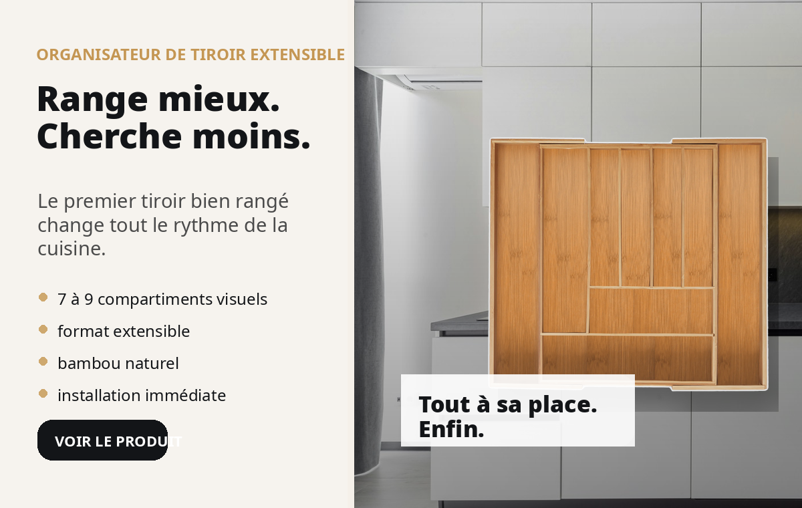
Chaque geste inutile s'accumule : chercher une cuillère, déplacer un fouet, reposer un accessoire. Le désordre est un coût caché.
Le produit est extensible et découpe visuellement le tiroir en zones claires. Tu ranges une fois, puis tu récupères de la fluidité tous les jours.
Le produit se vend bien quand on montre un résultat concret : avant / après, gain de temps, impression de propre, adaptation à un petit espace.
S’ajuste au tiroir au lieu d’imposer une taille figée.
Le rendu visuel est plus premium que du plastique basique.
Moins de recherche, plus d’action lors de la préparation des repas.
Le produit marche bien dans une petite cuisine ou un tiroir secondaire.
Ils renvoient tous vers cette landing. Tu peux publier en organique ou les pousser en ads.
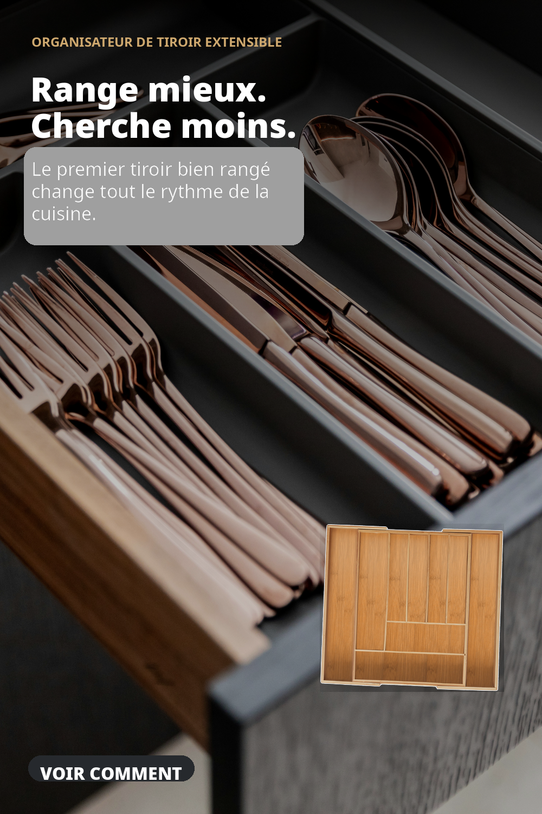
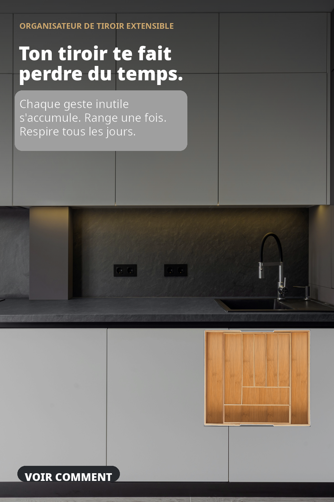
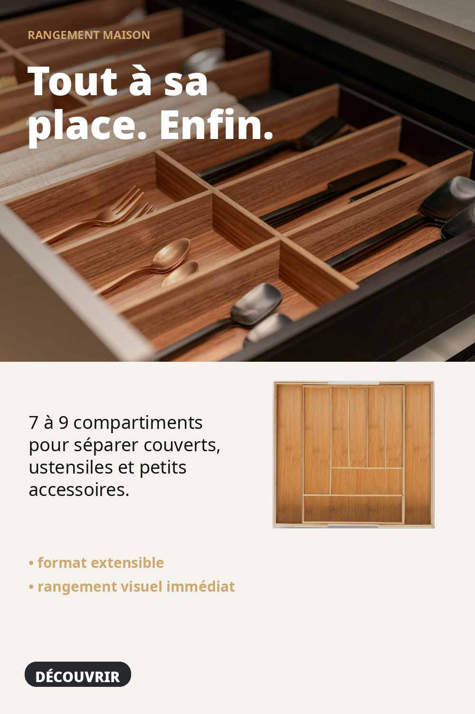
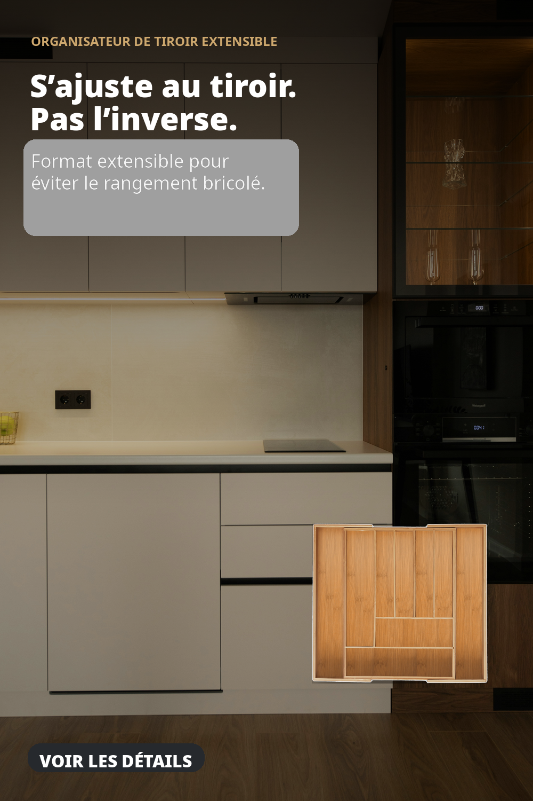
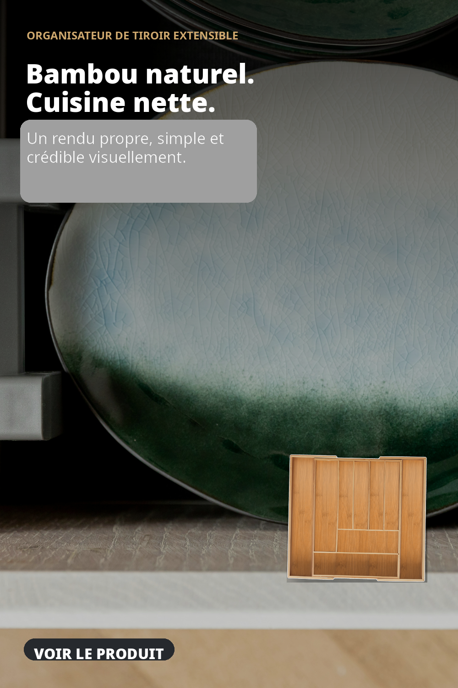
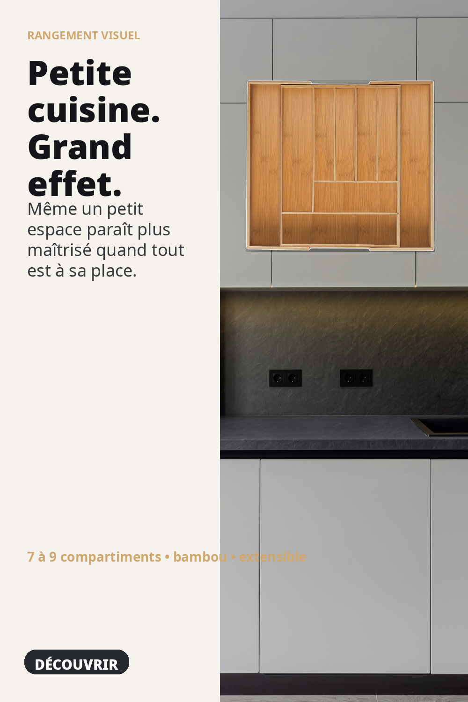
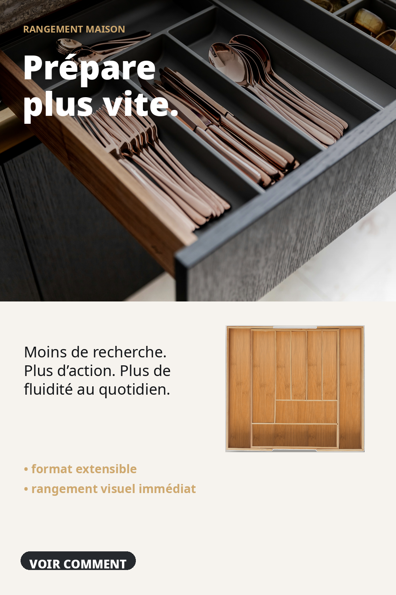
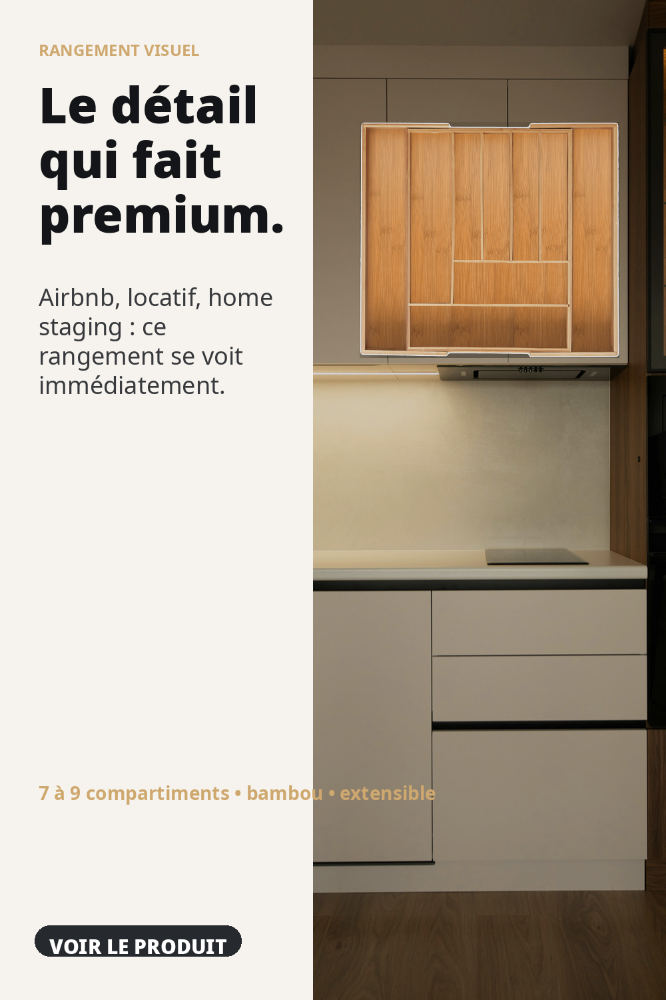
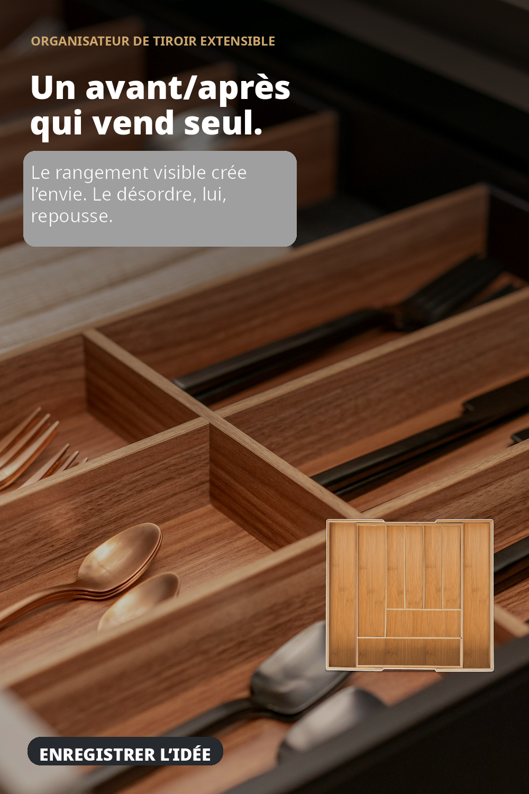
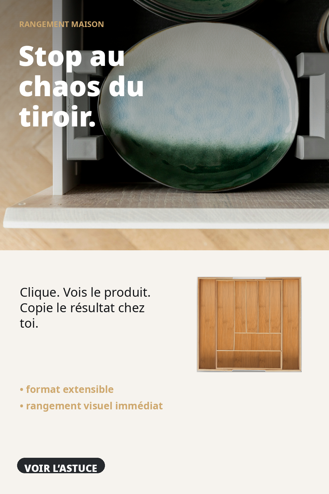
Le visuel porte un bénéfice net, pas une fiche produit brute.
Elle clarifie la promesse, montre le produit et cadre l’action.
Tu envoies ensuite vers le lien Amazon fourni dans la configuration.
Dans la version rapide du pack, non. Tu fais de l’acquisition et tu rediriges vers Amazon via un lien d’affiliation. Si tu veux devenir vendeur Amazon au sens strict, suis la procédure Seller Central dans le dossier docs.
La landing capture la source du pin dans l’URL et peut envoyer un événement Pinterest Tag au clic. Les ventes exactes côté Amazon sont simples à lire en mode vendeur avec Amazon Attribution si tu es éligible ; en mode affiliation, la mesure est plus limitée.
Le nom de marque, l’URL Amazon finale, le code Pinterest Tag, le code de vérification de domaine Pinterest, et le texte de disclosure Amazon adapté à ton compte.